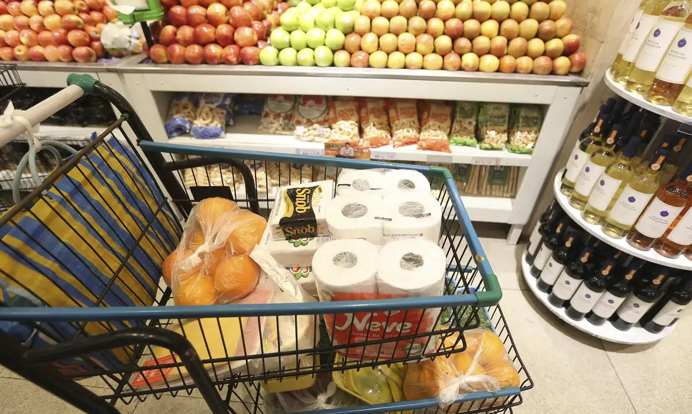

O preço dos alimentos devem baixar nos próximos dois meses, diz Simone Tebet, Ministra do Planejamento, Orçamento e Gestão
Os preços dos alimentos devem baixar já nos próximos 60 dias, graças às medidas que vêm sendo adotadas pelo governo federal. A afirmação foi feita nesta terça-feira (25) pela ministra do Planejamento, Orçamento e Gestão, Simone Tebet, durante o programa Bom Dia, Ministra, produzido pela Empresa Brasil de Comunicação (EBC). De acordo com Tebet, a alta de preços se deve a fatores como mudanças climáticas e quebras de safra, inclusive em outros países produtores.
Segundo a ministra, o governo tem adotado “as medidas certas, na medida certa”, para, no futuro, conseguir baixar o preço dos alimentos.
Entre as medidas elogiadas pela ministra estão algumas implementadas pelo Ministério da Agricultura, Pecuária e Abastecimento, visando a desburocratização de regras de comercialização de alguns produtos, como ovo, entre diferentes unidades federativas, sem a necessidade de um selo nacional. Bastaria, segundo a ministra, a apresentação, por exemplo, de um selo local.